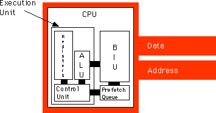

|
Table of Content | Chapter Three (Part 5) |
|
Table of Content | Chapter Three (Part 5) |
| CHAPTER THREE: SYSTEM ORGANIZATION (Part 4) |
| 3.3.10 -
The 886 Processor 3.3.11 - The 8286 Processor |
| 3.3.10 The 886 Processor |
The 886 processor is the slowest member of the x86 family.
Timings for each instruction were discussed in the previous sections. The mov instruction,
for example, takes between five and twelve clock cycles to execute depending upon the
operands. The following table provides the timing for the various forms of the
instructions on the 886 processors.
There are three important things to note from this. First, longer instructions take more time to execute. Second, instructions that do not reference memory generally execute faster; this is especially true if there are wait states associated with memory access (the table above assumes zero wait states). Finally, instructions using complex addressing modes run slower. Instructions which use register operands are shorter, do not access memory, and do not use complex addressing modes. This is why you should attempt to keep your variables in registers.
The key to improving the speed of a processor is to perform
operations in parallel. If, in the timings given for the 886, we were able to do two
operations on each clock cycle, the CPU would execute instructions twice as fast when
running at the same clock speed. However, simply deciding to execute two operations per
clock cycle is not so easy. Many steps in the execution of an instruction share functional
units in the CPU (functional units are groups of logic that perform a common operation,
e.g., the ALU and the CU). A functional unit is only capable of one operation at a time.
Therefore, you cannot do two operations that use the same functional unit concurrently
(e.g., incrementing the ip register and adding two values together). Another
difficulty with doing certain operations concurrently is that one operation may depend on
the other's result. For example, the last two steps of the add instruction
involve adding to values and then storing their sum. You cannot store the sum into a
register until after you've computed the sum. There are also some other resources the CPU
cannot share between steps in an instruction. For example, there is only one data bus; the
CPU cannot fetch an instruction opcode at the same time it is trying to store some data to
memory. The trick in designing a CPU that executes several steps in parallel is to arrange
those steps to reduce conflicts or add additional logic so the two (or more) operations
can occur simultaneously by executing in different functional units. Consider again the
steps the mov reg, mem/reg/const instruction requires:
ip register to point at the next
byte. ip to point beyond the
operand. The first operation uses the value of the ip
register (so we cannot overlap incrementing ip with it) and it uses the bus to fetch the
instruction opcode from memory. Every step that follows this one depends upon the opcode
it fetches from memory, so it is unlikely we will be able to overlap the execution of this
step with any other. The second and third operations do not share any functional units,
nor does decoding an opcode depend upon the value of the ip register.
Therefore, we can easily modify the control unit so that it increments the ip
register at the same time it decodes the instruction. This will shave one cycle off the
execution of the mov instruction. The third and fourth operations above
(decoding and optionally fetching the 16-bit operand) do not look like they can be done in
parallel since you must decode the instruction to determine if it the CPU needs to fetch a
16-bit operand from memory. However, we could design the CPU to go ahead and fetch the
operand anyway, so that it's available if we need it. There is one problem with this idea,
though, we must have the address of the operand to fetch (the value in the ip
register) and if we must wait until we are done incrementing the ip register
before fetching this operand. If we are incrementing ip at the same time
we're decoding the instruction, we will have to wait until the next cycle to fetch this
operand. Since the next three steps are optional, there are several possible instruction
sequences at this point: #1 (step 4, step 5, step 6, and step 7) - e.g., mov ax, [1000+bx]
#2 (step 4, step 5, and step 7) - e.g., mov ax, [1000] #3 (step 6 and step 7) - e.g., mov
ax, [bx] #4 (step 7) - e.g., mov ax, bx In the sequences above, step seven always relies
on the previous set in the sequence. Therefore, step seven cannot execute in parallel with
any of the other steps. Step six also relies upon step four. Step five cannot execute in
parallel with step four since step four uses the value in the ip register,
however, step five can execute in parallel with any other step. Therefore, we can shave
one cycle off the first two sequences above as follows: #1 (step 4, step 5/6, and step 7)
#2 (step 4, step 5/7) #3 (step 6 and step 7) #4 (step 7) Of course, there is no way to
overlap the execution of steps seven and eight in the mov instruction since
it must surely fetch the value before storing it away. By combining these steps, we obtain
the following steps for the mov instruction:
ip to
point beyond xxxx. By adding a small amount of logic to the CPU, we've shaved
one or two cycles off the execution of the mov instruction. This simple
optimization works with most of the other instructions as well. Another problem with the
execution of the mov instruction concerns opcode alignment. Consider the mov
ax, [1000] instruction that appears at location 100 in memory. The CPU spends one
cycle fetching the opcode and, after decoding the instruction an determining it has a
16-bit operand, it takes two additional cycles to fetch that operand from memory (because
that operand appears at an odd address - 101). The real travesty here is that the extra
clock cycle to fetch these two bytes is unnecessary, after all, the CPU fetched the L.O.
byte of the operand when it grabbed the opcode (remember, the x86 CPUs are 16-bit
processors and always fetch 16 bits from memory), why not save that byte and use only one
additional clock cycle to fetch the H.O. byte? This would shave one cycle off the
execution time when the instruction begins at an even address (so the operand falls on an
odd address). It would require only a one-byte register and a small amount of additional
logic to accomplish this, well worth the effort. While we are adding a register to buffer
up operand bytes, let's consider some additional optimizations that could use the same
logic. For example, consider what happens with that same mov instruction
above executes. If we fetch the opcode and L.O. operand byte on the first cycle and the
H.O. byte of the operand on the second cycle, we've actually read four bytes, not three.
That fourth byte is the opcode of the next instruction. If we could save this opcode until
the execution of the next instruction, we could shave a cycle of its execution time since
it would not have to fetch the opcode byte. Furthermore, since the instruction decoder is
idle while the CPU is executing the mov instruction, we can actually decode the next
instruction while the current instruction is executing, thereby shaving yet another cycle
off the execution of the next instruction. On the average, we will fetch this extra byte
on every other instruction. Therefore, implementing this simple scheme will allow us to
shave two cycles off about 50% of the instructions we execute. Can we do anything about
the other 50% of the instructions? The answer is yes. Note that the execution of the mov
instruction is not accessing memory on every clock cycle. For example, while storing the
data into the destination register the bus is idle. During time periods when the bus is
idle we can pre-fetch instruction opcodes and operands and save these values for executing
the next instruction. The major improvement to the 8286 over the 886 processor is the prefetch
queue. Whenever the CPU is not using the Bus Interface Unit (BIU), the BIU can fetch
additional bytes from the instruction stream. Whenever the CPU needs an instruction or
operand byte, it grabs the next available byte from the prefetch queue. Since the BIU
grabs two bytes at a time from memory at one shot and the CPU generally consumes fewer
than two bytes per clock cycle, any bytes the CPU would normally fetch from the
instruction stream will already be sitting in the prefetch queue. Note, however, that
we're not guaranteed that all instructions and operands will be sitting in the prefetch
queue when we need them. For example, the jmp 1000 instruction will
invalidate the contents of the prefetch queue. If this instruction appears at location
400, 401, and 402 in memory, the prefetch queue will contain the bytes at addresses 403,
404, 405, 406, 407, etc. After loading ip with 1000 the bytes at addresses
403, etc., won't do us any good. So the system has to pause for a moment to fetch the
double word at address 1000 before it can go on. Another improvement we can make is to
overlap instruction decoding with the last step of the previous instruction. After the CPU
processes the operand, the next available byte in the prefetch queue is an opcode, and the
CPU can decode it in anticipation of its execution. Of course, if the current instruction
modifies the ip register, any time spent decoding the next instruction goes
to waste, but since this occurs in parallel with other operations, it does not slow down
the system. This sequence of optimizations to the system requires quite a few changes to
the hardware. A block diagram of the system appears below:

The instruction execution sequence now assumes that the following events occur in the background: CPU Prefetch Events:
ip at
the beginning of the clock cycle. The instruction execution timings make a few optimistic
assumptions, namely that any necessary opcodes and instruction operands are already
present in the prefetch queue and that it has already decoded the current instruction
opcode. If either cause is not true, an 8286 instruction's execution will delay while the
system fetches the data from memory or decodes the instruction. The following are the
steps for each of the 8286 instructions: mov reg, mem/reg/const
mov mem, reg
instr reg, mem/reg/const (instr = add,
sub, cmp, and, or)
not mem/reg
jcc xxxx (conditional jump, cc=a, ae,
b, be, e, ne)
ip
register, one cycle.
jmp xxxx
ip
register, one cycle. As for the 886, we will not consider the execution times of the other x86 instructions since most of them are indeterminate. The jump instructions look like they execute very quickly on the 8286. In fact, they may execute very slowly. Don't forget, jumping from one location to another invalidates the contents of the prefetch queue. So although the jmp instruction looks like it executes in one clock cycle, it forces the CPU to flush the prefetch queue and, therefore, spend several cycles fetching the next instruction, fetching additional operands, and decoding that instruction. Indeed, it make be two or three instructions after the jmp instruction before the CPU is back to the point where the prefetch queue is operating smoothly and the CPU is decoding opcodes in parallel with the execution of the previous instruction. The has one very important implication to your programs: if you want to write fast code, make sure to avoid jumping around in your program as much as possible. Note that the conditional jump instructions only invalidate the prefetch queue if they actually make the jump. If the condition is false, they fall through to the next instruction and continue to use the values in the prefetch queue as well as any pre-decoded instruction opcodes. Therefore, if you can determine, while writing the program, which condition is most likely (e.g., less than vs. not less than), you should arrange your program so that the most common case falls through and conditional jump rather than take the branch. Instruction size (in bytes) can also affect the performance of the prefetch queue. It never requires more than one clock cycle to fetch a single byte instruction, but it always requires two cycles to fetch a three-byte instruction. Therefore, if the target of a jump instruction is two one-byte instructions, the BIU can fetch both instructions in one clock cycle and begin decoding the second one while executing the first. If these instructions are three-byte instructions, the CPU may not have enough time to fetch and decode the second or third instruction by the time it finishes the first. Therefore, you should attempt to use shorter instructions whenever possible since they will improve the performance of the prefetch queue. The following table provides the (optimistic) execution times for the 8286 instructions:
Note how much faster the mov instruction runs
on the 8286 compared to the 886. This is because the prefetch queue allows the processor
to overlap the execution of adjacent instructions. However, this table paints an overly
rosy picture. Note the disclaimer: "assuming the opcode is present in the prefetch
queue and has been decoded." Consider the following three instruction sequence:
????: jmp 1000 1000: jmp 2000 2000: mov cx, 3000[bx]
The second and third instructions will not execute
as fast as the timings suggest in the table above. Whenever we modify the value of the ip
register the CPU flushes the prefetch queue. So the CPU cannot fetch and decode the next
instruction. Instead, it must fetch the opcode, decode it, etc., increasing the execution
time of these instructions. At this point the only improvement we've made is to execute
the "update ip" operation in parallel with another step. Usually,
including the prefetch queue improves performance. That's why Intel provides the prefetch
queue on every model of the 80x86, from the 8088 on up. On these processors, the BIU is
constantly fetching data for the prefetch queue whenever the program is not actively
reading or writing data. Prefetch queues work best when you have a wide data bus. The 8286
processor runs much faster than the 886 because it can keep the prefetch queue full.
However, consider the following instructions:
100: mov ax, [1000] 105: mov bx, [2000] 10A: mov cx, [3000]
Since the ax, bx, and cx
registers are 16 bits, here's what happens (assuming the first instruction is in the
prefetch queue and decoded):
ip.End of first instruction. Two bytes currently in prefetch queue.
ip.
End of second instruction. Three bytes currently in prefetch queue.
ip.
As you can see, the second instruction requires one more clock cycle than the other two instructions. This is because the BIU cannot fill the prefetch queue quite as fast as the CPU executes the instructions. This problem is exasperated when you limit the size of the prefetch queue to some number of bytes. This problem doesn't exist on the 8286 processor, but most certainly does exist in the 80x86 processors. You'll soon see that the 80x86 processors tend to exhaust the prefetch queue quite easily. Of course, once the prefetch queue is empty, the CPU must wait for the BIU to fetch new opcodes from memory, slowing the program. Executing shorter instructions helps keep the prefetch queue full. For example, the 8286 can load two one-byte instructions with a single memory cycle, but it takes 1.5 clock cycles to fetch a single three-byte instruction. Usually, it takes longer to execute those four one-byte instructions than it does to execute the single three-byte instruction. This gives the prefetch queue time to fill and decode new instructions. In systems with a prefetch queue, it's possible to find eight two-byte instructions which operate faster than an equivalent set of four four-byte instructions. The reason is that the prefetch queue has time to refill itself with the shorter instructions. Moral of the story: when programming a processor with a prefetch queue, always use the shortest instructions possible to accomplish a given task.
|
Table of Content | Chapter Three (Part 5) |
Chapter Three: System Organization
(Part 4)
26 SEP 1996